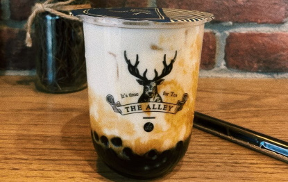

What is Bubble Tea?
Bubble tea is a Taiwanese tea-based drink created in Tainan and Taichung in the 1980s. Recipes tend to contain tea of some variant, flavours or milk, and even sugar

History
According to the legend, teahouse owner Tu Tsong-he was bandying about in the Ya Mu Liao market when he saw white tapioca balls. Inspired, he proceeded to make tea using these traditional white balls (that resemble pearls), which created the so-called “pearl tea” combination.

Types of Bubble Tea